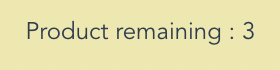

this counter doesnt change when I mark products as bought
you didnt create a single Product component
there is no need for these to be async
'delete all marked as bought' doesn't really delete those items, when you change filter they come back
overall good :)